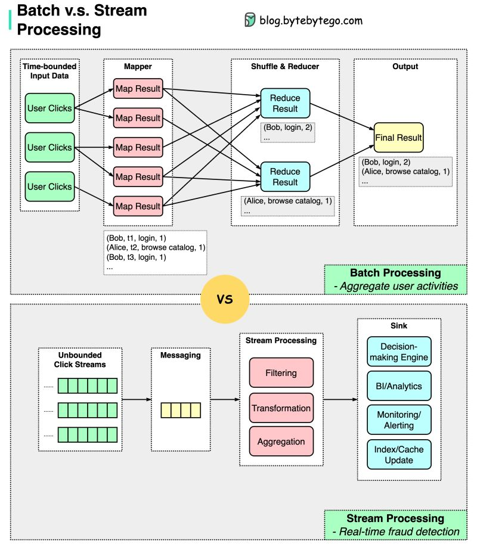

Batch and Big Data Processing
How petabyte-scale datasets get processed offline — from MapReduce’s shuffle to Spark’s DAG, columnar storage, and the lambda-vs-kappa debate.
In this lesson
Why batch still matters
Batch processing operates on a large, bounded input — a day’s logs, a full table snapshot, a crawl corpus — and produces a derived output (an index, a report, a model’s training set). Unlike a request/response service, a batch job has no latency SLA per record; it optimizes for throughput and cost per byte processed. A well-tuned job pushes hardware to its limits: sequential disk and network bandwidth rather than random IOPS.
Even in a streaming-first world (see Stream Processing and CDC), batch remains indispensable for three reasons: it is the only sane way to reprocess history after a bug or schema change; it produces the gold-standard correct answer that streaming approximations are reconciled against; and many workloads — nightly billing, training data assembly, large joins across full datasets — are simply more efficient as bounded jobs. The output of a batch job is immutable and idempotent: rerun it on the same input and you get the same output, which makes failure recovery trivial — just rerun the failed task.
MapReduce: map, shuffle, reduce
MapReduce (Dean & Ghemawat, Google, 2004) was the model that made petabyte processing routine on commodity hardware. It expresses a computation as two user functions over key/value pairs:
map(k1, v1) -> list(k2, v2) // one input record -> many intermediate pairs
reduce(k2, list(v2)) -> list(k3, v3) // all values for one key -> aggregated outputThe canonical word-count: map emits (word, 1) for each token; the framework groups all 1s by word; reduce sums them. The genius is not the two functions — it is everything the framework does between them, automatically: input splitting, scheduling map tasks near their data (data locality, since the job ran on HDFS DataNodes), the shuffle that moves intermediate data to reducers, sorting by key, fault-tolerant re-execution of failed tasks, and straggler mitigation via speculative execution (launch a duplicate of a slow task and take whichever finishes first).
Execution phases
- Map: each split (typically one HDFS block, 128–256 MB) is read by one mapper; output is buffered, sorted, and spilled to local disk, partitioned by
hash(key) % numReducers. - Shuffle: reducers pull their partition from every mapper’s local disk over the network. This is an all-to-all transfer.
- Sort/merge: each reducer merge-sorts the incoming streams so all values for a key arrive contiguously.
- Reduce: the user function runs over each key group; output is written to HDFS with replication.
MapReduce also has a long-tail latency problem: the whole job is gated on its slowest reducer, and a single hot key (data skew) can stall the job for hours while every other reducer sits idle. A combiner — a map-side pre-aggregation, e.g. summing partial word counts before the shuffle — reduces shuffle volume but only helps for associative/commutative reductions.
The shuffle is the bottleneck
Across every batch engine — MapReduce, Spark, Hive, Presto — the shuffle is the single dominant cost and the thing a principal engineer reasons about first. It is the all-to-all redistribution of data that happens whenever you change the partitioning key: a GROUP BY, a JOIN, a reduceByKey, a repartition. With M map tasks and R reduce tasks, the shuffle is up to M×R connections moving data over the network and through local disk on both ends.
Why it hurts:
- Network is the scarce resource. Cross-rack bandwidth is oversubscribed; moving terabytes between nodes saturates it. Locality (processing data where it lives) avoids the network on the map side, but the shuffle inherently cannot.
- It materializes to disk. Shuffle data is spilled to local disk so it survives a fetch failure without recomputing the producer — trading I/O for fault tolerance.
- It is a barrier. Reducers cannot start until enough map output exists; a skewed or slow producer stalls the consumer stage.
Data skew is the shuffle’s evil twin: if one key (a null, a sentinel, a celebrity user) carries 40% of the rows, one reducer gets 40% of the work and the job’s wall-clock is set by that task. Mitigations include salting the hot key (append a random suffix, aggregate in two passes) and isolating skewed keys into a separate broadcast path. Spark’s Adaptive Query Execution detects skew at runtime and splits oversized partitions automatically.
Spark: RDDs, DAGs, and in-memory
Apache Spark (Zaharia et al., 2012) keeps MapReduce’s fault-tolerance and locality but fixes its two cardinal sins: the rigid two-phase model and the disk materialization between stages. Its core abstraction is the RDD (Resilient Distributed Dataset) — an immutable, partitioned collection with a recorded lineage of the transformations that built it.
Lazy DAG, not eager jobs
Transformations (map, filter, join, reduceByKey) are lazy — they only build a logical graph. Nothing runs until an action (count, collect, saveAsTable) forces evaluation. At that point the DAG scheduler compiles the lineage into stages, splitting at shuffle boundaries:
rdd = sc.textFile("hdfs://logs/2026-06-12/*") // transformation (lazy)
.map(parse) // narrow dep
.filter(lambda r: r.status == 500) // narrow dep
.map(lambda r: (r.endpoint, 1)) // narrow dep -- all one stage
.reduceByKey(lambda a,b: a+b) // WIDE dep -> shuffle, stage boundary
counts = rdd.collect() // action -> triggers executionWithin a stage, consecutive narrow dependencies (each output partition depends on one input partition) are pipelined into a single pass with no intermediate materialization — map, filter, and map above all fuse together. A wide dependency (a partition depends on many inputs) forces a shuffle and ends the stage. This is the structural win over MapReduce: many operators per stage instead of one rigid map+reduce.
In-memory and lineage-based recovery
Spark can cache() / persist() an RDD in cluster memory, so an iterative algorithm reuses the dataset across iterations without re-reading disk — the reason Spark is often 10–100× faster than MapReduce on iterative ML and interactive queries. Fault tolerance does not rely on replicating the cached data: if a partition is lost, Spark recomputes it from lineage, replaying only the transformations for that partition. For long lineages, checkpointing to reliable storage truncates the recovery chain.
| MapReduce | Spark | |
|---|---|---|
| Programming model | Fixed map + reduce | Arbitrary DAG of operators |
| Intermediate data | Written to HDFS (replicated 3×) | Pipelined in memory; spill to local disk only when needed |
| Iterative jobs | One job per iteration (re-read disk) | Cache once, reuse in memory |
| Fault recovery | Re-run task; inputs durable on HDFS | Recompute partition from lineage |
| Latency | Minutes; JVM startup per task | Sub-second to seconds; long-lived executors |
The modern Spark stack is Spark SQL / DataFrames on top of the Catalyst optimizer and Tungsten execution engine: you write SQL or a typed DataFrame, Catalyst applies relational optimizations (predicate pushdown, join reordering, broadcast selection) and Tungsten generates whole-stage compiled bytecode operating on off-heap columnar memory. You almost never write raw RDD code today — but understanding RDD lineage explains why a job’s recovery and stage boundaries behave as they do.
Data lake, warehouse, lakehouse
The compute engine is half the story; where the data lives and in what shape is the other half.
- Data warehouse (Snowflake, BigQuery, Redshift, Teradata): schema-on-write, highly structured, optimized columnar storage with strong SQL, governance, and ACID. Loading requires conforming to a schema up front. Excellent for BI and known query patterns; historically expensive and rigid for raw/semi-structured data.
- Data lake (files on S3/HDFS/GCS, queried by Spark/Presto/Hive): schema-on-read, store anything — raw JSON, logs, images, Parquet — cheaply, decide structure at query time. Flexible and cheap, but easily degenerates into a data swamp with no transactions, no schema enforcement, and no atomic updates.
- Lakehouse (Delta Lake, Apache Iceberg, Apache Hudi): a transactional table format layered over open columnar files in object storage. It adds a metadata/manifest layer that brings ACID transactions, schema evolution, time travel, and efficient upserts/deletes to the lake — warehouse semantics on lake economics. Iceberg’s hidden partitioning and snapshot isolation, Delta’s transaction log, and Hudi’s copy-on-write/merge-on-read are the dominant designs.
Columnar formats & ETL vs ELT
Analytics scans many rows but few columns: “average revenue by region” reads 2 columns out of 200. Columnar formats — Parquet and ORC — store values column-by-column rather than row-by-row, which is decisive for analytical (OLAP) workloads:
- Column pruning: read only the columns the query touches — 100× less I/O than a row format that must read whole rows.
- Compression: a column holds homogeneous values, so run-length, dictionary, and delta encoding compress far better than mixed-type rows — often 5–10×.
- Predicate pushdown: per-rowgroup min/max statistics and zone maps let the reader skip entire blocks that cannot match a filter, without decompressing them.
- Vectorized execution: contiguous same-type values feed SIMD-friendly, batch-at-a-time operators (Spark Tungsten, Presto).
The contrast is a row format (CSV, Avro, JSON): great for write-once, read-whole-row, streaming append (Avro is the standard wire/serialization format for Kafka topics), terrible for wide-table analytics. A common pipeline lands raw events as Avro, then compacts to Parquet for the analytical layer.
ETL vs ELT
ETL (Extract, Transform, Load) transforms data before loading it into the target — the classic warehouse pattern when storage and compute were expensive and you only loaded clean, conformed data. ELT (Extract, Load, Transform) loads raw data into a cheap lake/lakehouse first, then transforms in place using the warehouse’s own elastic compute (the dbt + Snowflake/BigQuery pattern). ELT won for most modern stacks because object storage is cheap, compute is elastic and decoupled, and keeping the raw data lets you re-derive transforms when requirements change — the same reprocessing argument that justifies batch in the first place.
Lambda vs Kappa architecture
The hardest design question in big-data systems is reconciling fast, approximate answers with slow, correct ones.
Lambda architecture
Proposed by Nathan Marz, Lambda runs two parallel pipelines over the same input:
- Batch layer: recomputes a comprehensive, correct view from the full immutable master dataset on a schedule (hours). Slow but authoritative; absorbs any bug because it always recomputes from raw.
- Speed layer: a stream processor computes a low-latency, approximate view over recent data only, covering the window the batch layer hasn’t caught up to yet.
- Serving layer: queries merge the batch view and the speed view; as each batch run completes, it overwrites the corresponding speed-layer window.
Kappa architecture
Proposed by Jay Kreps, Kappa eliminates the batch layer entirely: there is only a stream. The trick is treating the immutable, replayable log (Kafka with long retention, or a lakehouse table) as the system of record. “Batch” reprocessing becomes replaying the stream from the beginning through the same stream-processing code — one codebase, one set of semantics. To fix a bug or change logic: deploy a new version of the job, replay the log into a fresh output, then cut over.
| Lambda | Kappa | |
|---|---|---|
| Codebases | Two (batch + stream) | One (stream only) |
| Reprocessing | Re-run batch job | Replay log from offset 0 |
| Correctness model | Batch is ground truth; speed is approximate | Exactly-once stream is ground truth |
| Weak spot | Logic drift between two paths | Needs long log retention & mature stream engine for heavy reprocessing |
Kappa is the modern default when the stream engine (Flink, Kafka Streams, Spark Structured Streaming) provides exactly-once semantics, event-time windowing, and watermarks — covered in Stream Processing and CDC. Lambda persists where batch reprocessing of enormous historical datasets (e.g. retraining over years of data, a full web-crawl corpus rebuild) is fundamentally cheaper or more capable as a true batch job than replaying a stream. In practice many systems are pragmatically hybrid: a Kappa-style serving path plus periodic batch backfills for correctness audits.
Principal-level mastery check
- A daily job processing 5 TB takes 6 hours and one reducer always runs 4× longer than the rest. Walk me through diagnosing and fixing it. (Looking for: data skew, hot key salting, AQE, broadcast vs sort-merge join.)
- Why is materializing intermediate results to HDFS between MapReduce jobs so expensive, and exactly how does Spark avoid it? Where does Spark still hit disk?
- We store events as JSON on S3 and queries are slow and costly. What changes and what do you trade away? (Parquet, partitioning scheme, column pruning, predicate pushdown, the small-files problem.)
- Argue for Kappa over Lambda for a real-time metrics pipeline, then tell me the conditions under which you’d keep a batch layer anyway.
- When would you choose a lakehouse (Iceberg/Delta) over a warehouse like Snowflake, and what specifically does the table format buy you over raw Parquet files? (ACID, time travel, GDPR deletes, schema evolution, atomic manifest swap.)
- Your batch job failed halfway through writing output. How do you guarantee a rerun produces correct, non-duplicated results? (Idempotency, atomic commit / write-to-temp-then-rename, partition overwrite, determinism.)
Visual references

Managed offerings for this component
The same concept, by name, across the big three clouds — so you reach for the right term in a design discussion:
| Concern | AWS | GCP | Azure |
|---|---|---|---|
| Managed Spark / Hadoop | EMR | Dataproc | HDInsight / Synapse Spark |
| Serverless big-data query | Athena, Redshift | BigQuery | Synapse Analytics |
Managed offerings as a vocabulary aid; cloud product names change — verify the current name before relying on it in production.